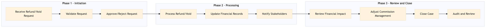

This process document outlines the steps for handling refund and void processing, including financial impact analysis, across various OTA and TMC systems.
| Trigger | A request for a refund or void is initiated by a customer or partner through any of the supported systems. |
| Outcome | The refund or void is successfully processed, financial records are updated accurately, and all stakeholders are notified of the status. |
| Systems | Expedia Open World Partner Central Amadeus NDC Sabre GDS Travelport EVC One Key TravelAds AWS SageMaker Snowflake Kafka Salesforce Tableau SAP Concur T2 SAP Concur Expense Amex GBT Neo/Complete Amadeus GDS SAP S/4HANA International SOS Cvent Amex Corporate Card VCN SAP Analytics Cloud Workday |

Click to enlarge
| Step | Name & Pain Point | Role | System | Input | Output | KPI | Flags |
|---|---|---|---|---|---|---|---|
| 1.1 | Receive Refund/Void Request Handling complex refund requests | Customer Service Representative (CSR) | Expedia Open World, Partner Central, Amadeus NDC, Sabre GDS, Travelport, EVC, One Key, TravelAds | Refund or void request from customer/partner | Request logged in system | Response time within 1 hour | ⚠ Exception |
| 1.2 | Validate Request Data inconsistency | Finance Analyst | AWS SageMaker, Snowflake | Logged request details | Validation report | Accuracy of validation within 30 minutes | ◆ Decision |
| 1.3 | Approve/Reject Request Delays in decision-making | Finance Manager | Salesforce, Tableau | Validation report | Approval or rejection status | Decision time within 2 hours | ⚠ Exception |
| 1.4 | Process Refund/Void Payment gateway failures | Payment Processor | Amex GBT Neo/Complete, Amadeus GDS, SAP S/4HANA | Approved request details | Refund or void transaction processed | Transaction completion within 1 hour | ⚠ Exception |
| 1.5 | Update Financial Records Data synchronization issues | Finance Analyst | Snowflake, Kafka | Transaction details | Updated financial records | Record update within 30 minutes | ⚠ Exception |
| 1.6 | Notify Stakeholders Communication breakdown | Customer Service Representative (CSR) | Salesforce, Tableau | Updated financial records | Notifications sent to customer/partner and internal teams | Notification time within 1 hour | ⚠ Exception |
| 1.7 | Review Financial Impact Complex financial calculations | Finance Analyst | SAP Analytics Cloud, Workday | Updated financial records | Financial impact analysis report | Analysis completion within 24 hours | ◆ Decision |
| 1.8 | Adjust Commission Management Manual commission calculations | Revenue Manager | SAP Concur T2, SAP Concur Expense | Financial impact analysis report | Commission adjustments made | Adjustment time within 48 hours | ⚠ Exception |
| 1.9 | Close Case Incomplete case resolution | Customer Service Representative (CSR) | Salesforce, Tableau | All notifications and adjustments completed | Case closed in system | Case closure within 24 hours | ⚠ Exception |
| 1.10 | Audit and Review Data privacy concerns | Internal Auditor | Snowflake, Kafka | All transaction details | Audit report | Audit completion within 7 days | ◆ Decision |